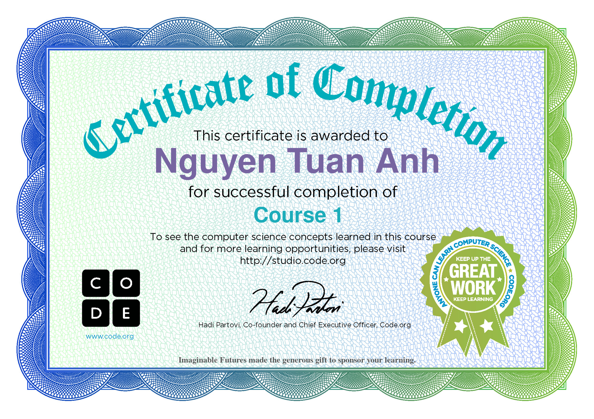

Nho mua thu Ha Noi
Hà Nội mùa thu, cây cơm nguội vàng, cây bàng lá đỏ
Nằm kề bên nhau, phố xưa nhà cổ, mái ngói thâm nâu1
- Bước 1: Tạo vòng kho lưu trữ local repo (git init)
- Bước 2: Đưa file vào vùng theo dõi (git add. hoặc git add trên _file)
- Bước 3: Tạo snapshot: git commit -m "First commit"
- Bước 4: Đổi tên nhánh master => main (git branch -M main)
- Bước 5: Gắn local repo vào remote repo: git remote add origin URL
- Bước 6: Thực hiện đồng bộ lên remote: git push -u origin main
- B1: git add .
- B2: git commit -m "Update content"
- B3: git push
